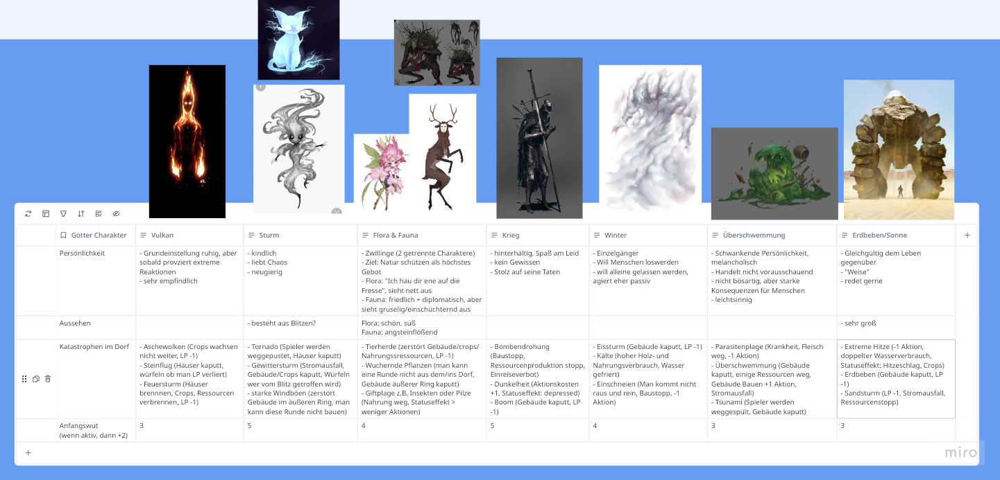

Götter
Unser Vorgehen bei der Entwicklung der Götterfiguren
Im Rahmen unserer Recherche haben wir zahlreiche Mythologien analysiert und die wichtigsten Erkenntnisse auf unserem Miro-Board gesammelt. Die nächste Herausforderung bestand darin, aus dieser vielfalt die passenden Götter für unsere einzelnen Gebiete auszuwählen.
Jeder von uns entwickelte dazu verschiedene Ideen in Form von Tabellen, Listen und Steckbriefen, um unterschiedliche Personas zu definieren. Anschließend haben wir all diese Vorschläge zusammengetragen, diskutiert und die besten Elemente für unsere Götterfiguren ausgewählt.
Ursprünglich hatten wir die Idee, die Götter als menschliche Figuren zu gestalten und sie an existierende Mythen anzulehnen. Im Team einigten wir uns jedoch darauf, bewusst eigene, nicht-menschliche Gottheiten zu erschaffen und uns von bestehenden Mythologien zu lösen. Denn unser Anspruch ist es, unsere Welt detailliert und eigenständig zu gestalten. Dadurch wollten wir unsere Kreativität nicht einschränken, sondern frei neue, einzigartige Figuren entstehen lassen.
Endgültige Götter (Stand Mai 2025)
Halbgötter
Die Entwicklung der Halbgötter und ihres Skilltrees
Nachdem wir den Göttern erste Charakterzüge und Eigenschaften zugewiesen hatten, konnten wir uns der Gestaltung der Halbgötter widmen. Unser Fokus lag dabei auf einem differenzierten Skilltree-System, das jedem der sieben Halbgötter eine eigene Spielweise verleiht.
Jeder Halbgott besitzt zwei Hauptzweige im Skilltree, die thematisch und funktional zu seiner Rolle passen. Pro Level kann der Spieler jedoch nur eine Fähigkeit aus einem der beiden Zweige auswählen. Dadurch entstehen individuelle Entwicklungspfade. Am Ende des Baumes erhält der Halbgott ein Bonus-Level, das sich nach dem dominierenden Hauptzweig richtet – also dem Pfad, für den sich der Spieler am häufigsten entschieden hat.
Wichtig war uns dabei, dass sich die Hauptzweige nicht wiederholen. Jeder Halbgott sollte einzigartige Fähigkeiten besitzen, die ihn für bestimmte Aufgaben und Spielsituationen besonders geeignet machen. So entstehen sieben verschiedene Charaktere, die sich strategisch deutlich voneinander unterscheiden.